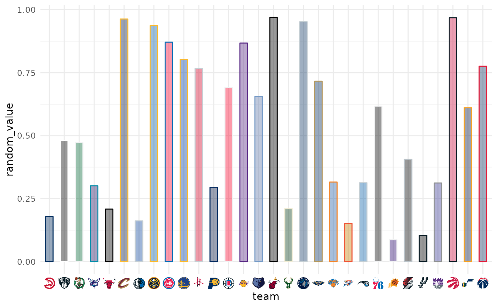
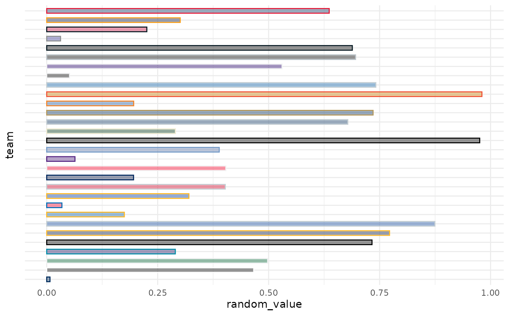
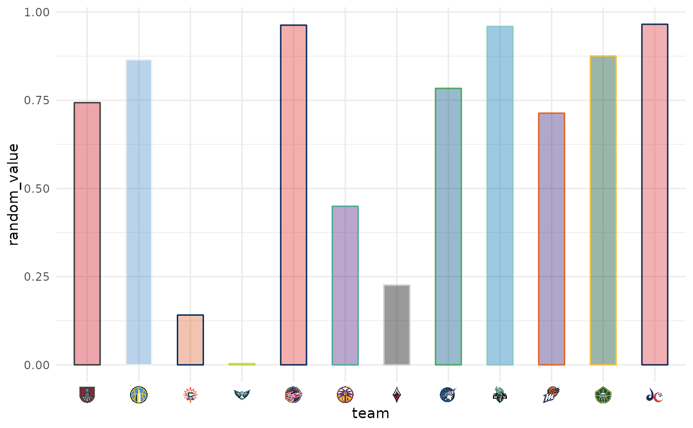
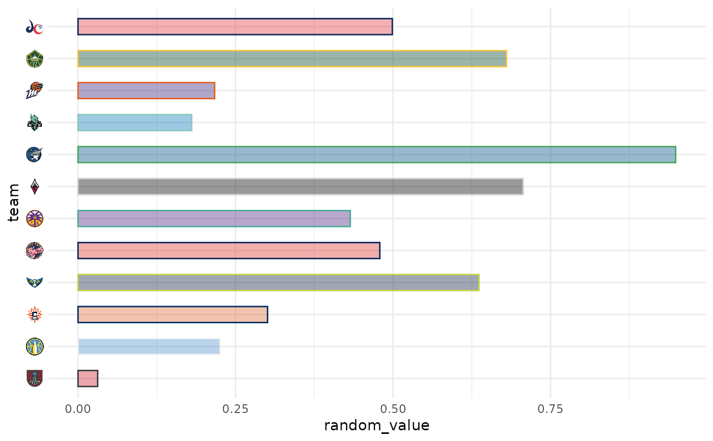

In conjunction with the ggplot2::theme system, the following element_
functions enable images in non-data components of the plot, e.g. axis text.
element_nba_logo(): draws NBA team logos instead of their abbreviations.element_wnba_logo(): draws WNBA team logos instead of their abbreviations.
Usage
element_nba_logo(
alpha = NULL,
colour = NA,
hjust = NULL,
vjust = NULL,
color = NULL,
size = 0.5
)
element_wnba_logo(
alpha = NULL,
colour = NA,
hjust = NULL,
vjust = NULL,
color = NULL,
size = 0.5
)Arguments
- alpha
The alpha channel, i.e. transparency level, as a numerical value between 0 and 1.
1Lskips alpha channel modification for more speed.- colour, color
The image will be colorized with this color. Defaults to
NA_character_which means no change of color at all. Use the special character"b/w"to set it to black and white. For more information on valid color names in ggplot2 see https://ggplot2.tidyverse.org/articles/ggplot2-specs.html?q=colour#colour-and-fill.- hjust
A numeric vector specifying horizontal justification. If specified, overrides the
justsetting.- vjust
A numeric vector specifying vertical justification. If specified, overrides the
justsetting.- size
The output grob size as a grid::unit. If given a numeric,
cmwill be applied as unit.
See also
geom_nba_logos(), geom_wnba_logos(), and ggpath::element_path()
for more information on valid team abbreviations, and other parameters.
Examples
# \donttest{
library(nbaplotR)
library(ggplot2)
######## NBA Examples ########
team_abbr <- valid_team_names("NBA")
df <- data.frame(
random_value = runif(length(team_abbr), 0, 1),
team = team_abbr
)
# use logos for x-axis
ggplot(df, aes(x = team, y = random_value)) +
geom_col(aes(color = team, fill = team), width = 0.5) +
scale_color_nba(type = "secondary") +
scale_fill_nba(alpha = 0.4) +
theme_minimal() +
theme(axis.text.x = element_nba_logo())

# use logos for y-axis
ggplot(df, aes(y = team, x = random_value)) +
geom_col(aes(color = team, fill = team), width = 0.5) +
scale_color_nba(type = "secondary") +
scale_fill_nba(alpha = 0.4) +
theme_minimal() +
theme(axis.text.y = element_nba_logo())

######## WNBA Examples ########
team_abbr <- valid_team_names("WNBA")
df <- data.frame(
random_value = runif(length(team_abbr), 0, 1),
team = team_abbr
)
# use logos for x-axis
ggplot(df, aes(x = team, y = random_value)) +
geom_col(aes(color = team, fill = team), width = 0.5) +
scale_color_wnba(type = "secondary") +
scale_fill_wnba(alpha = 0.4) +
theme_minimal() +
theme(axis.text.x = element_wnba_logo())

# use logos for y-axis
ggplot(df, aes(y = team, x = random_value)) +
geom_col(aes(color = team, fill = team), width = 0.5) +
scale_color_wnba(type = "secondary") +
scale_fill_wnba(alpha = 0.4) +
theme_minimal() +
theme(axis.text.y = element_wnba_logo())

# }